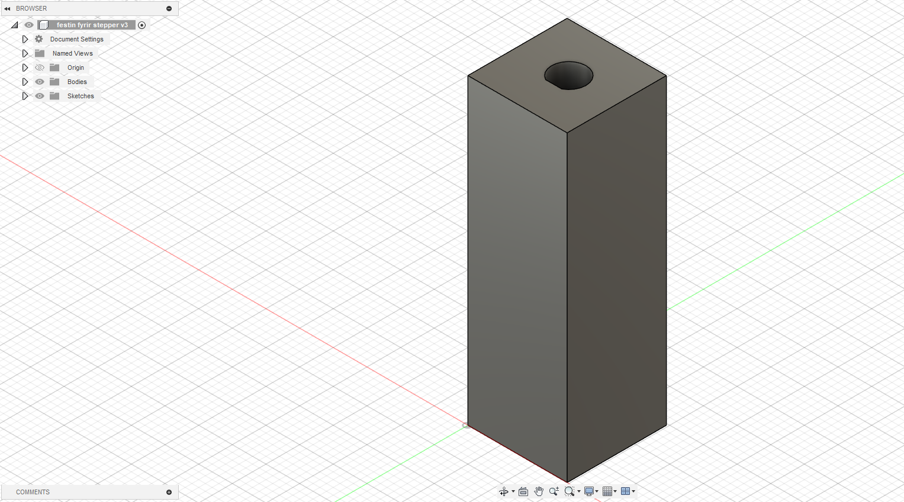
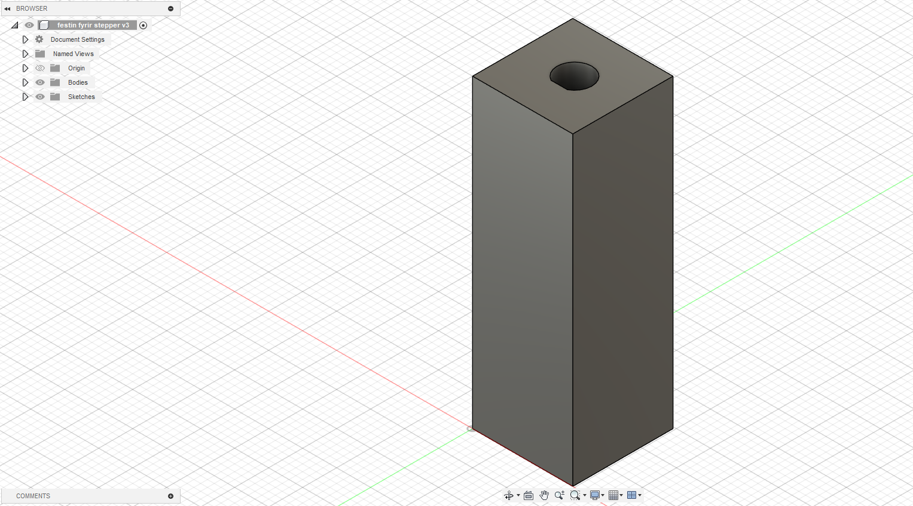
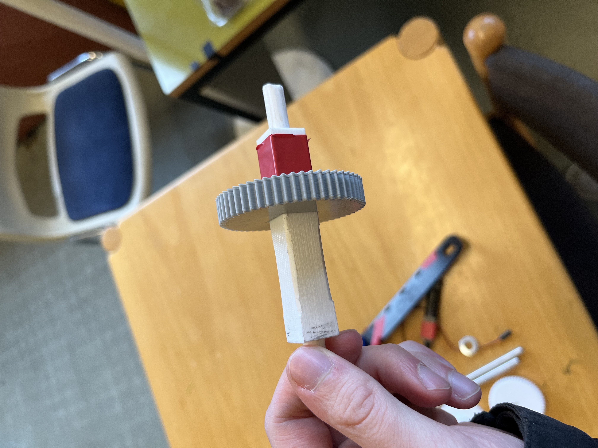
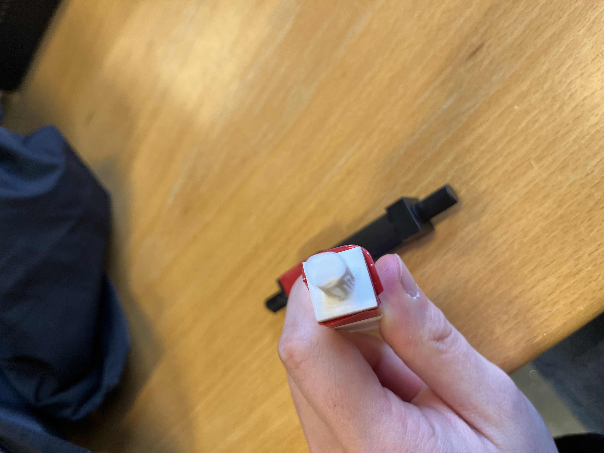
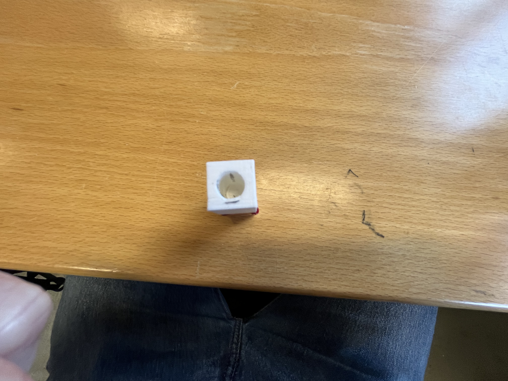
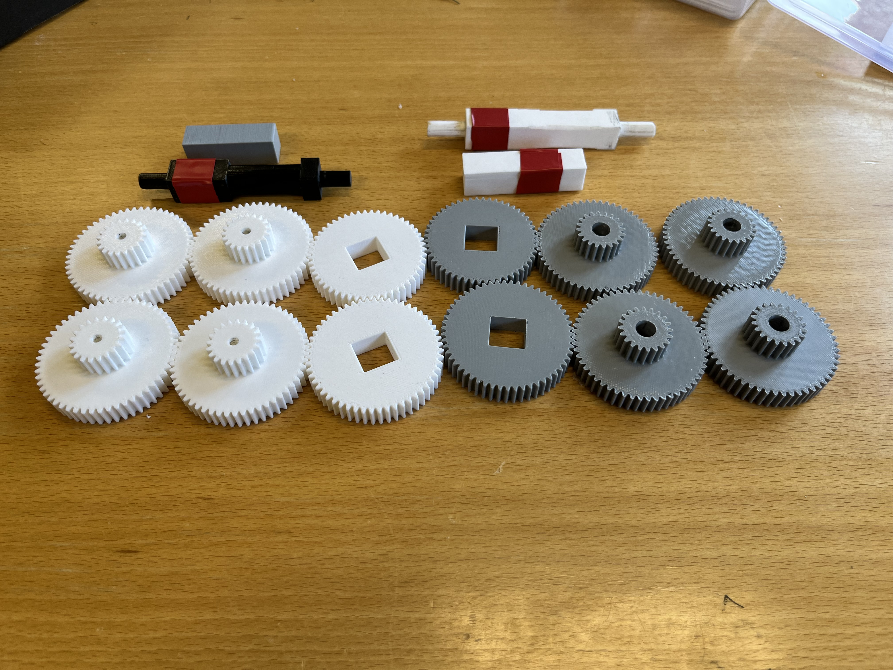
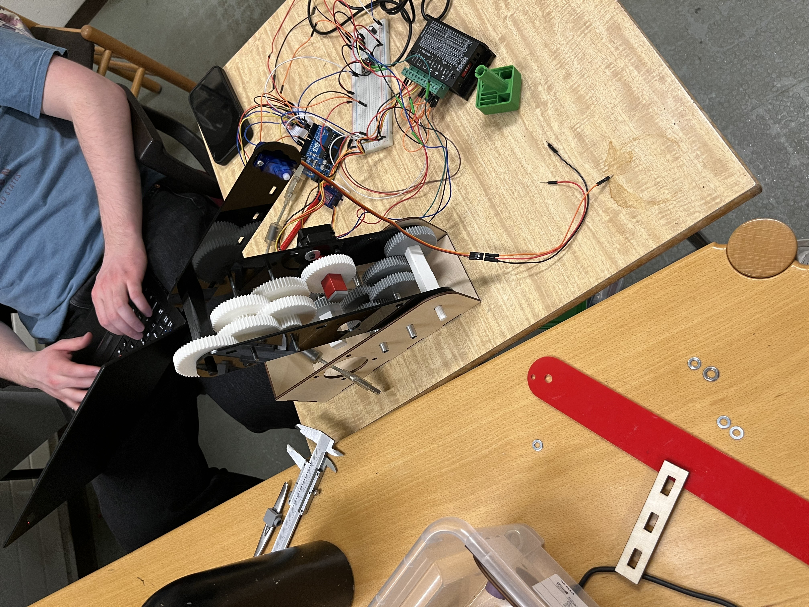

Verkefni 3
3D Prentun
Í verkefni þrjú 3D prentaði ég íhluti fyrir mötunarróbot sem ég og hópurinn minn bjuggum til fyrir áfangan Tölvustýrðan Vélbúnað. Hönnunin okkar leit svona út:
Eins og sá má á myndinni hér að ofan eru öxlarnir sem að snúa örmunum og gírunum og gírarnir sjáfir 3D prentaðir. Til að byrja með hannaði ég gíranna sem að áttu að snúa fyrsta arminum, það var gert með aðstoð gíra add-in í fusion. Samtímis hannaði ég tvo öxla, einn sem festist við stepper mótorinn og fyrsti gírin smellur á og annar sem að snýst á endan á gírboxinu og snýr arminum. Hér að neðann má sjá myndir af fusion hönnuninni:
 


Síðann var þessu styllt upp í forritinu prusa slicer, fyrir gíranna var ekki notast neitt support en fyiri báða öxlana var það stillt á "everywhere" og leit þetta svona út þegar þessu var hent í prentun:


Hér má síðan sjá hvernig þetta kom út eftir prentun og eftir að búið var að taka af stuðningin:
  Sjá má á þessum myndum að gírarnir heppnuðust vel en öxlarnir komu alls ekki nógu vel út. Festingin við stepperin fór í smá klessu vegna þess að prentarinn setti stuðning inní gatið og öxullin hélst ekki hringlaga í gegnum prentið. Í stað þess að prenta nýja var ákveðið að slípa þessa aðeins til og nota þá bara, sem gekk nægilega vel upp eftir smá vinnu. Næsta 3D prent sem að við þurftum var annað sett af gírum og öxulum nema nú fyrir seinni armin, Ég ákvað að endurbæta hönnunina og búa til betri öxla til þess að hægt væri að sleppa við að slípa þá. Eftir smá breytingar í fusion var nýju hlutunum styllt upp í prusa slicer og nú passaði ég að stylla festingunni við stepperin þannig upp að hún þyrfti engan stuðning og notaði hentugri stillingu fyrir öxulin sem snýr arminum. Hér að neðan má sjá hvernig þetta leit út í prusa slicer:

Þessir hlutir komu mikið betur út og við gátum notað þá ánn þess að slípa þá neitt til. Að neðan má svo sjá hvernig þetta leit út í róbotinum:
 3D Skönnun
Í 3D skönnunini notaðist ég við appið polycam, með því gat ég notað síman minn til þess að taka fullt af myndum af skyrdrykk og appið setti þær síðan allar saman og bjó til 3D mynd af drykknum. Hinsvegar leyfði appið mér bara að exporta myndband vegna þess að ég tímdi ekki að borga pening, þannig hér að neðan má sjá myndband af 3D skannaða hlutnum:
Möguleg leið til að bæta gæðinn á hlutnum væri að taka fleiri myndir af honum en til þess þarf einnig kaupa premium aðgang í polycam.